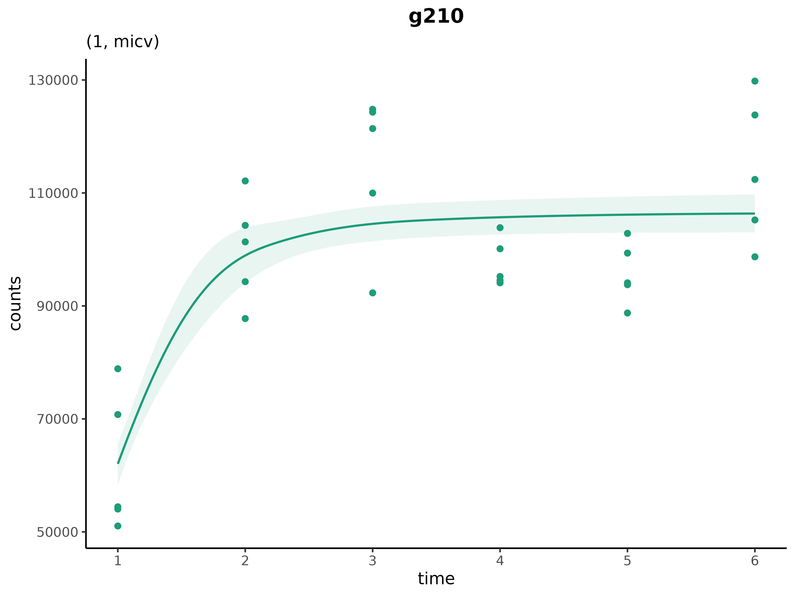

About
This tutorial demonstrates the R package cpam for the
analysis of time series omics data. It serves as a basic introduction to
the package. There are also two detailed case studies using real world
data:
These case studies and several simulation studies are presented in the accompanying manuscript by Yates et al. (2024). See also, the package website.
Data
The data for the following examples have been simulated based on empirical RNA-seq data. These data are gene-level counts from a case-only design with 6 time points and 5 replicates per time point. Code to reproduce the data is available in this repository.
Getting started
Experimental design
An example experimental design is included in the cpam
package. Since it is case-only design, there are no experimental
conditions beyond time.
# load example data
load(system.file("extdata", "exp_design_example.rda", package = "cpam"))
exp_design_example
#> # A tibble: 30 × 2
#> sample time
#> <chr> <int>
#> 1 X1 1
#> 2 X2 1
#> 3 X3 1
#> 4 X4 1
#> 5 X5 1
#> 6 X6 2
#> 7 X7 2
#> 8 X8 2
#> 9 X9 2
#> 10 X10 2
#> # ℹ 20 more rowsCount matrix
The example count data for are provided as a matrix. Let’s take a look at the first few rows.
# load example data
load(system.file("extdata", "count_matrix_example.rda", package = "cpam"))
as.data.frame(count_matrix_example) %>% head
#> X1 X2 X3 X4 X5 X6 X7 X8 X9 X10 X11 X12 X13 X14 X15 X16
#> g001 100702 93137 100748 90302 95962 79708 89726 85350 94282 121842 102158 90054 103692 78474 80961 81403
#> g002 8654 7926 8930 9196 8882 7993 8479 9865 8015 7060 9523 7124 9004 7840 10012 8161
#> g003 3258 3131 3024 3507 3687 2419 2456 2553 2238 2588 2250 2098 2166 1884 2339 1807
#> g004 24572 18575 28039 27230 25244 24315 26200 24790 26165 22652 24722 20735 27313 30438 26432 25533
#> g005 125565 118382 115517 105728 114457 120633 115978 108458 113169 115742 132714 121729 96647 134781 123007 124228
#> g006 1988 2058 2530 2135 2131 2139 2043 2068 2298 2281 2021 2097 2237 1951 1970 2175
#> X17 X18 X19 X20 X21 X22 X23 X24 X25 X26 X27 X28 X29 X30
#> g001 76614 87686 81953 106238 87308 83021 81013 95695 109277 97975 79013 88479 119039 80521
#> g002 8789 9250 8816 7514 9565 7690 8946 7980 8919 9059 8227 7858 9253 9145
#> g003 1961 1791 1763 1893 1577 1505 1628 1511 1757 1573 1512 1659 1514 1355
#> g004 23079 27307 24375 26901 27090 28163 26881 26964 23837 24079 21432 23805 21358 29200
#> g005 126771 110148 95926 105201 100622 110298 145240 129146 114071 132796 125034 124525 115182 87204
#> g006 1990 2035 2295 2051 2159 1792 2003 2190 2140 2130 2281 2036 2241 2182Fitting cpam
To fit the models, we first prepare the cpam object,
then compute p-values, estimate changepoints, and select the shape for
each gene. In this simple example, simulated data are gene-level, that
is we do not have isoform-level counts. As such, we leave
```the transcript-to-gene mapping (t2g) and we setgene_level
= T`.
cpo <- prepare_cpam(exp_design = exp_design_example,
count_matrix = count_matrix_example,
model_type = "case-only",
t2g = NULL,
gene_level = T,
num_cores = 1) # just for the example
cpo <- compute_p_values(cpo) # 6 seconds
cpo <- estimate_changepoint(cpo) # 4 seconds
cpo <- select_shape(cpo) # 5 secondsWe can look at a summary of the fitted cpam object
cpoIf you run the code on your own computer, you can launch the Shiny
app to visualise the results interactively using
visualise(cpo).
Result tables
The results of the analysis are summarised using the
results function.
results(cpo)
#> # A tibble: 104 × 16
#> target_id p cp shape lfc.1 lfc.2 lfc.3 lfc.4 lfc.5 lfc.6 counts.1 counts.2 counts.3 counts.4 counts.5
#> <chr> <dbl> <dbl> <chr> <dbl> <dbl> <dbl> <dbl> <dbl> <dbl> <dbl> <dbl> <dbl> <dbl> <dbl>
#> 1 g003 9.26e-319 1 mdcx 0 -0.349 -0.634 -0.856 -1.02 -1.11 3267. 2566. 2105. 1805. 1617.
#> 2 g013 9.26e-319 3 ilin 0 0 0 0.327 0.655 0.982 18662. 18662. 18662. 23416. 29382.
#> 3 g055 9.26e-319 1 ilin 0 0.195 0.389 0.584 0.778 0.973 608. 696. 796. 911. 1043.
#> 4 g063 9.26e-319 1 cv 0 0.595 0.937 1.03 0.861 0.443 6172. 9322. 11814. 12563. 11210.
#> 5 g069 9.26e-319 2 ilin 0 0 0.225 0.451 0.676 0.902 67904. 67904. 79391. 92821. 108524.
#> 6 g090 9.26e-319 2 ilin 0 0 0.238 0.476 0.715 0.953 32.9 32.9 38.7 45.7 53.9
#> 7 g106 9.26e-319 1 mdcx 0 -0.470 -0.778 -0.892 -0.902 -0.902 30076. 21709. 17542. 16202. 16090.
#> 8 g126 9.26e-319 1 ilin 0 0.225 0.450 0.675 0.900 1.12 4017. 4695. 5487. 6412. 7494.
#> 9 g128 9.26e-319 1 ilin 0 0.209 0.418 0.628 0.837 1.05 38099. 44043. 50915. 58859. 68043.
#> 10 g129 9.26e-319 1 cv 0 0.626 0.978 1.11 1.08 0.888 259. 399. 510. 560. 545.
#> # ℹ 94 more rows
#> # ℹ 1 more variable: counts.6 <dbl>The generated results can be filtered by specifying minimum counts, minimum log-fold changes, and maximum -values. For example, to return only the transcripts with a log-fold change greater than 1, at least 10 counts, and a -value less than 0.01, we can run
results(cpo, min_count = 10, min_lfc = 1, p_threshold = 0.01)
#> # A tibble: 22 × 16
#> target_id p cp shape lfc.1 lfc.2 lfc.3 lfc.4 lfc.5 lfc.6 counts.1 counts.2 counts.3 counts.4 counts.5
#> <chr> <dbl> <dbl> <chr> <dbl> <dbl> <dbl> <dbl> <dbl> <dbl> <dbl> <dbl> <dbl> <dbl> <dbl>
#> 1 g063 9.26e-319 1 cv 0 0.595 0.937 1.03 0.861 0.443 6172. 9322. 11814. 12563. 11210.
#> 2 g126 9.26e-319 1 ilin 0 0.225 0.450 0.675 0.900 1.12 4017. 4695. 5487. 6412. 7494.
#> 3 g128 9.26e-319 1 ilin 0 0.209 0.418 0.628 0.837 1.05 38099. 44043. 50915. 58859. 68043.
#> 4 g129 9.26e-319 1 cv 0 0.626 0.978 1.11 1.08 0.888 259. 399. 510. 560. 545.
#> 5 g171 9.26e-319 1 cv 0 0.593 0.922 1.01 0.901 0.616 4950. 7468. 9382. 9989. 9241.
#> 6 g186 9.26e-319 1 cx 0 -0.233 -0.324 -0.209 0.219 1.05 19740. 16792. 15774. 17077. 22974.
#> 7 g331 9.26e-319 3 ilin 0 0 0 0.339 0.678 1.02 37.0 37.0 37.0 46.8 59.1
#> 8 g334 9.26e-319 1 micv 0 0.402 0.692 0.886 1.00 1.06 2798. 3696. 4519. 5171. 5614.
#> 9 g341 9.26e-319 1 cx 0 -0.465 -0.593 -0.383 0.164 1.05 23681. 17157. 15704. 18161. 26532.
#> 10 g393 9.26e-319 1 cv 0 0.432 0.747 0.945 1.02 0.987 932. 1257. 1564. 1793. 1896.
#> # ℹ 12 more rows
#> # ℹ 1 more variable: counts.6 <dbl>Plotting genes and transcripts
A single gene can be plotted using the plot_cpam
function. Here we plot the gene g063
plot_cpam(cpo, gene_id = "g063")
The subtitle shows (1,cv) indicating a changepoint at first
time point (i.e., the gene responds immediately) and a convex
('cv') shaped trend.
Let’s look for a gene that has a more complex trend. Unconstrained
shapes in cpam are denoted by
'tp'.1 We can filter the
results for genes with unconstrained shapes and plot one of them.
results(cpo) %>%
filter(shape == "tp")
#> # A tibble: 14 × 16
#> target_id p cp shape lfc.1 lfc.2 lfc.3 lfc.4 lfc.5 lfc.6 counts.1 counts.2 counts.3 counts.4
#> <chr> <dbl> <dbl> <chr> <dbl> <dbl> <dbl> <dbl> <dbl> <dbl> <dbl> <dbl> <dbl> <dbl>
#> 1 g210 9.26e-319 1 tp 0 0.640 0.835 0.662 0.624 0.842 62930. 98034. 112257. 99573.
#> 2 g325 9.26e-319 1 tp 0 -0.896 -0.881 -0.157 0.209 -0.0882 68067. 36583. 36956. 61053.
#> 3 g335 9.26e-319 1 tp 0 0.251 0.310 0.240 0.455 0.979 1155. 1374. 1432. 1364.
#> 4 g339 9.26e-319 1 tp 0 -0.754 -0.775 -0.307 -0.367 -0.913 4361. 2586. 2548. 3526.
#> 5 g399 9.26e-319 1 tp 0 0.248 0.486 0.704 0.874 1.01 3917. 4652. 5487. 6382.
#> 6 g400 9.26e-319 1 tp 0 -0.915 -0.672 0.558 0.706 -0.268 9725. 5159. 6105. 14312.
#> 7 g417 9.26e-319 1 tp 0 -0.424 -0.573 -0.532 -0.710 -0.982 7232. 5390. 4861. 5003.
#> 8 g424 9.26e-319 1 tp 0 -0.324 -0.226 0.0439 -0.204 -0.905 9557. 7636. 8173. 9852.
#> 9 g640 9.26e-319 1 tp 0 0.574 0.765 0.396 0.497 0.920 1044. 1554. 1773. 1373.
#> 10 g715 9.26e-319 1 tp 0 0.835 0.808 -0.238 -0.680 -0.333 157157. 280360. 275216. 133216.
#> # ℹ 4 more rows
#> # ℹ 2 more variables: counts.5 <dbl>, counts.6 <dbl>We plot the first gene in the list.
plot_cpam(cpo, gene_id = "g210") This selection of
This selection of 'tp' suggests that the trend for this
gene does not conform to one of the simpler shape types that
cpam uses. We can exclude 'tp' as an option
and force cpam to choose among the simpler forms by setting
shape_type = "shape2" in the plot_cpam
function ("shape1", the default, allows the
'tp'). This choice can be useful for analysis such as
clustering. For example:
plot_cpam(cpo, gene_id = "g210",shape_type = "shape2")
Here a monotonic increasing concave shape (‘micv’) is chosen, and we can
see this trend deviates from the data substantially more that the
unconstrained shape. See the manuscript for more
details on the shape types available in cpam.
Next we look for a gene with a changepoint by filtering for genes with changepoints at the third time point.
results(cpo) %>%
filter(cp == 3)
#> # A tibble: 13 × 16
#> target_id p cp shape lfc.1 lfc.2 lfc.3 lfc.4 lfc.5 lfc.6 counts.1 counts.2 counts.3 counts.4 counts.5
#> <chr> <dbl> <dbl> <chr> <dbl> <dbl> <dbl> <dbl> <dbl> <dbl> <dbl> <dbl> <dbl> <dbl> <dbl>
#> 1 g013 9.26e-319 3 ilin 0 0 0 0.327 0.655 0.982 18662. 18662. 18662. 23416. 29382.
#> 2 g146 9.26e-319 3 dlin 0 0 0 -0.329 -0.659 -0.988 168. 168. 168. 134. 106.
#> 3 g187 9.26e-319 3 dlin 0 0 0 -0.419 -0.839 -1.26 18216. 18216. 18216. 13622. 10186.
#> 4 g297 9.26e-319 3 ilin 0 0 0 0.308 0.616 0.924 9799. 9799. 9799. 12133. 15021.
#> 5 g304 9.26e-319 3 cx 0 0 0 -1.04 -0.652 0.883 3130. 3130. 3130. 1520. 1993.
#> 6 g331 9.26e-319 3 ilin 0 0 0 0.339 0.678 1.02 37.0 37.0 37.0 46.8 59.1
#> 7 g559 9.26e-319 3 ilin 0 0 0 0.292 0.584 0.877 444. 444. 444. 543. 665.
#> 8 g623 9.26e-319 3 micv 0 0 0 0.317 0.634 0.951 329. 329. 329. 409. 510.
#> 9 g634 9.26e-319 3 cx 0 0 0 -0.880 -1.13 -0.759 12547. 12547. 12547. 6818. 5721.
#> 10 g652 9.26e-319 3 ilin 0 0 0 0.363 0.726 1.09 13016. 13016. 13016. 16739. 21528.
#> # ℹ 3 more rows
#> # ℹ 1 more variable: counts.6 <dbl>Again, we plot the first gene in the list.
plot_cpam(cpo, gene_id = "g013")Clusters
The results function can be used to generate clusters according to
selected filters. The plot_cluster function can then be
used to visualise the clusters. With such a small simulated data set, we
don’t have many genes in each cluster, but we can try a few different
clustering options to get an idea of how the function works.
res <- results(cpo)
plot_cluster(cpo, res, changepoints = 1, shapes = c("cv"))There are 19 genes with a concave shape and a changepoint at the first time point.
More than one shape or changepoint can be provided. For example:
plot_cluster(cpo, res, changepoints = 2, shapes = c("dlin","mdcx")) There are just four genes with decreasing linear or monotonic decreasing
convex shapes which have a changepoint at the second time point.
There are just four genes with decreasing linear or monotonic decreasing
convex shapes which have a changepoint at the second time point.
Clustering can be further refined based on, for example, the rate at which the above transcripts attain their maximum values. We illustrate advanced refinements such as this case study.
Session Info
Click to expand
sessionInfo()
#> R version 4.5.2 (2025-10-31)
#> Platform: x86_64-pc-linux-gnu
#> Running under: Ubuntu 24.04.3 LTS
#>
#> Matrix products: default
#> BLAS: /usr/lib/x86_64-linux-gnu/openblas-pthread/libblas.so.3
#> LAPACK: /usr/lib/x86_64-linux-gnu/openblas-pthread/libopenblasp-r0.3.26.so; LAPACK version 3.12.0
#>
#> locale:
#> [1] LC_CTYPE=C.UTF-8 LC_NUMERIC=C LC_TIME=C.UTF-8 LC_COLLATE=C.UTF-8 LC_MONETARY=C.UTF-8
#> [6] LC_MESSAGES=C.UTF-8 LC_PAPER=C.UTF-8 LC_NAME=C LC_ADDRESS=C LC_TELEPHONE=C
#> [11] LC_MEASUREMENT=C.UTF-8 LC_IDENTIFICATION=C
#>
#> time zone: UTC
#> tzcode source: system (glibc)
#>
#> attached base packages:
#> [1] stats graphics grDevices utils datasets methods base
#>
#> other attached packages:
#> [1] ggplot2_4.0.1 stringr_1.6.0 tidyr_1.3.1 dplyr_1.1.4 cpam_0.1.3.9000
#>
#> loaded via a namespace (and not attached):
#> [1] sass_0.4.10 utf8_1.2.6 generics_0.1.4 stringi_1.8.7 lattice_0.22-7 digest_0.6.39
#> [7] magrittr_2.0.4 evaluate_1.0.5 grid_4.5.2 RColorBrewer_1.1-3 fastmap_1.2.0 Matrix_1.7-4
#> [13] jsonlite_2.0.0 limma_3.66.0 mgcv_1.9-3 purrr_1.2.0 scales_1.4.0 codetools_0.2-20
#> [19] textshaping_1.0.4 jquerylib_0.1.4 cli_3.6.5 rlang_1.1.6 pbmcapply_1.5.1 splines_4.5.2
#> [25] scam_1.2-20 withr_3.0.2 cachem_1.1.0 yaml_2.3.11 tools_4.5.2 parallel_4.5.2
#> [31] locfit_1.5-9.12 vctrs_0.6.5 R6_2.6.1 matrixStats_1.5.0 lifecycle_1.0.4 edgeR_4.8.0
#> [37] fs_1.6.6 ragg_1.5.0 pkgconfig_2.0.3 desc_1.4.3 pkgdown_2.2.0 pillar_1.11.1
#> [43] bslib_0.9.0 gtable_0.3.6 Rcpp_1.1.0 glue_1.8.0 statmod_1.5.1 systemfonts_1.3.1
#> [49] xfun_0.54 tibble_3.3.0 tidyselect_1.2.1 knitr_1.50 farver_2.1.2 nlme_3.1-168
#> [55] htmltools_0.5.8.1 labeling_0.4.3 rmarkdown_2.30 compiler_4.5.2 S7_0.2.1 mvnfast_0.2.8
1tp stands for thinplate which is the
type of spline used for the ‘unconstrained’ curves as defined in the
mgcv package. The curves are still penalised to be smooth,
but the shape type is not fixed.